Benchmark Tools Presentation
Alexandre Nuttinck & Sébastien Dupont
NewTech4Steel Meeting
CETIC Avenue Jean Mermoz 28, 6041 Charleroi
12-03-2019
Benchmark Tools Categories
TSimulus ~ Sensors SimulatorTool made at CETIC. With TSimulus, we can:
|
input for |
Performance / Load TestingDetermines a system's performance under real-life load conditions. Helps determine how the application behaves when there are usage spikes. |
input for |
MonitoringServices and infrastructure monitoring tools provide information on the state of the system. Should be coupled with the Load testing tests and/or with TSimulus. |
TSimulus
An opensource realistic time series generator made at CETIC.|
Mathieu Goemine TSimulus Creator |
Alexandre Nuttinck TSimulus Contributor |
TSimulus
Origins
- EAM-SDI: research project with Guardis.
- Specific area of automatic infrastructure management.
- Collect data of cpus, fans, ...
- Monitoring, take reactions against events.
- Problem: lack of real data and in real time.
- The solution was to simulate a large number of sensors gathering information from a collection and analysis system.
TSimulus
What is TSimulus?
TSimulus (formally, RTS-Gen) is a tool for generating random, yet realistic, time series values.
Time series?
- An ordered sequence of points in time, each of them is associated with at most one value.
- Timestamp → value (typically, real).
- example: 2018-03-12T14:00:00.000 - 20°C
- Used in a wide variety of fields.
Random but realistic?
- Convincing noise.
- Models, patterns.
TSimulus
How TSimulus works?
|
In input 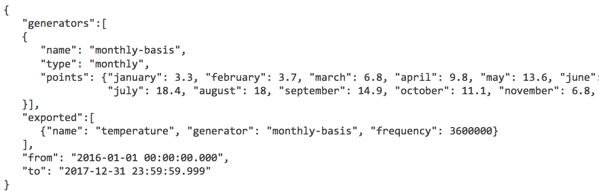A DSL that describes "the look" of the timeseries Cycles (daily, weekly) Noise (white, ARMA) combinations conditions |
Output 
triplets (series, timestamp, value) |
TSAAS ~ TSimulus as a Service
TSimulus as Sensors simulator
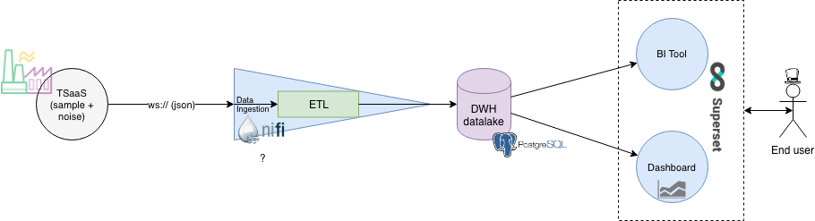TSAAS ~ TSimulus as a Service
TSimulus as Sensors simulator
Load Testing
- feed the system with requests the largest task it can handle
- increase the load
- simulate virtual users/sensors
- expose defects
- determine the upper limit for all the testbed system components
|
|
Load Testing
Locust
- Scalable user load testing tool written in Python.
- Simple-to-use, distributed, user load testing tool and used to help load test web sites or other applications.
- Help you figure out how many concurrent users a system can handle.
- Define the behaviour you want for each of your Locust instances.
- Gives you the ability to monitor the swarming process from a web UI in real time.

|
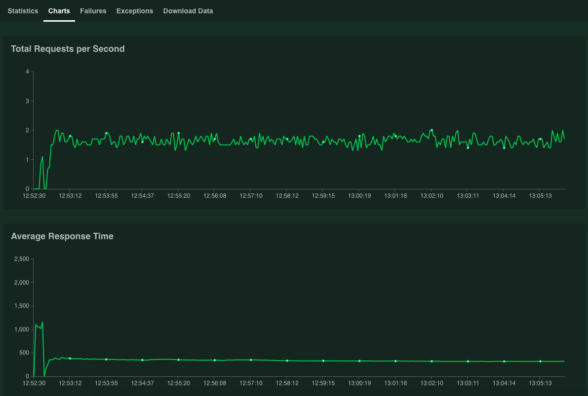 |
Sources: Locust, Locust Dashboard Image , Locust Charts Image.
Load Testing
Gatling
- Stress tool built on Scala, Akka and Netty.
- Allows you to test and measure your application’s end-to-end performance.
- Generates web-based visualisations of test results automatically.
| 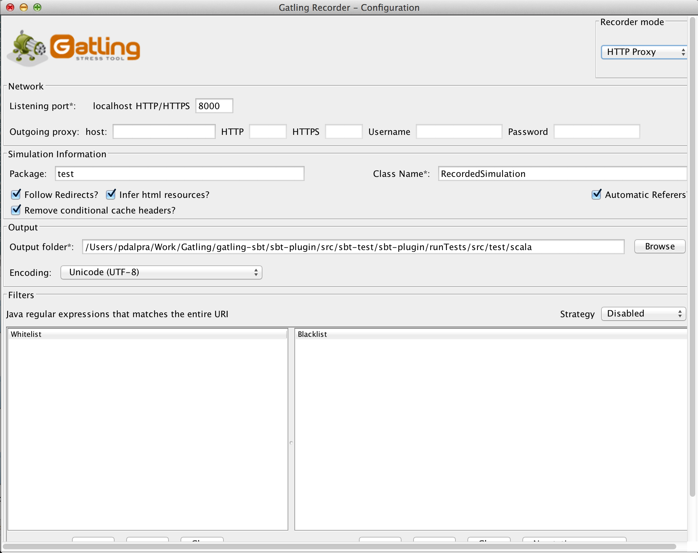 | 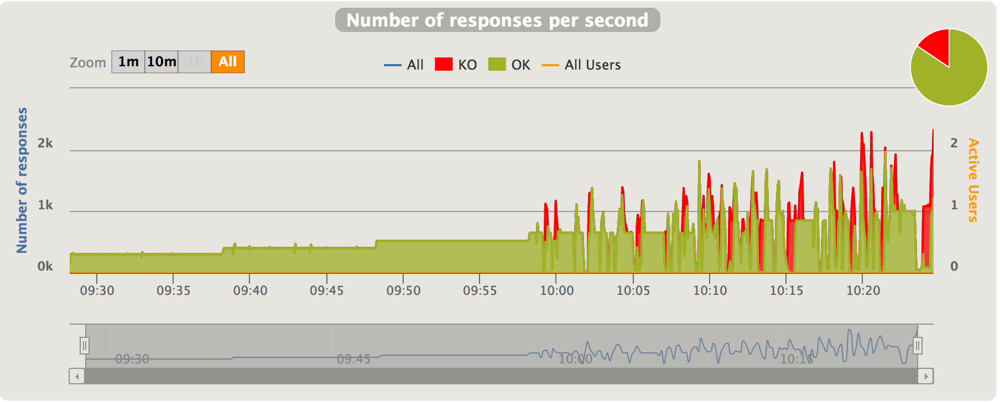 |
Sources: Gatling, Gatling Dashboard Image , Gatling Charts Image.
Load Testing
Tsung
- Open-source, multi-protocol distributed load testing tool.
- Can monitor a client’s CPU, memory, and network traffic.
| 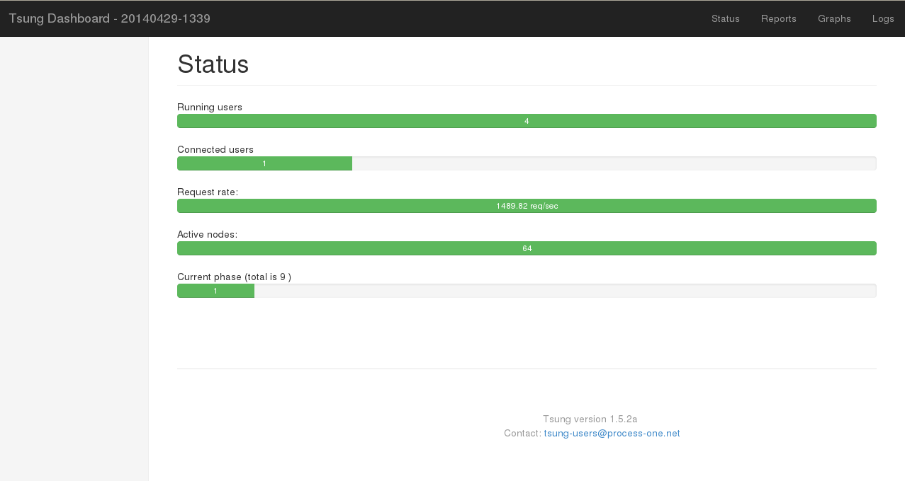 | 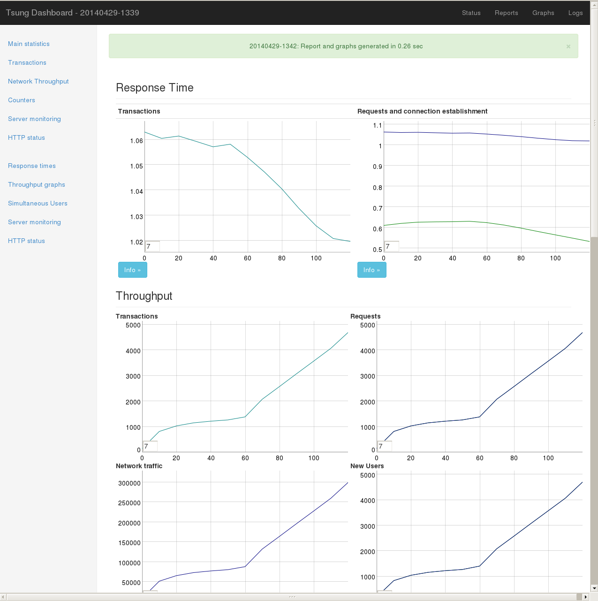 |
Sources: Tsung, Tsung Dashboard Image , Tsung Charts Image.
Load Testing
JMeter
- "Most" popular open-source tool in the load testing space.
- Java application designed specifically for load testing with the ability to measure performance.
| 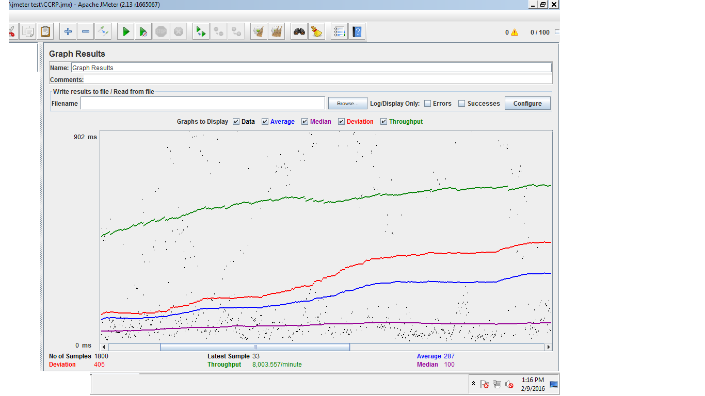 |
Sources: JMeter, JMeter Dashboard Image.
Monitoring
Process of gathering hardware and software measures and ensuring that the service is working as intended.
Monitoring categories
- Infrastructure Monitoring
- Service Monitoring
A complete monitoring system will provide a dashboard to check the system health, usage, and send alerts when something is not running properly.
It can also be extended to react to changes in the system state (scale the backend when under high load, restart an unresponsive service, ...).
Monitoring
Infrastructure Monitoring
To monitor the state of the infrastructure, such as
- CPU usage
- Memory usage
- Disk space
- Average response times
- Errors and requests rates
- ...
a tool like:

|
can do the job!
Cloud providers have also their own monitoring tools. For instance, Cloudwatch for AWS or Stackdriver for Google Cloud.
Monitoring
Infrastructure Monitoring
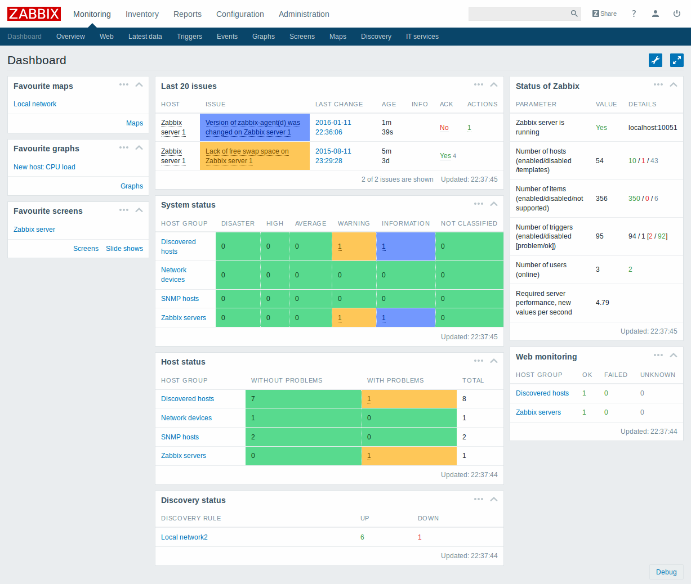Source: Zabbix.
Monitoring
Service Monitoring
Service Mesh = a dedicated infrastructure layer that ensures communication between services.
Array of lightweight proxies that are deployed on top of applications.
Handles routing, load balancing, provides logging, telemetry, etc.
Istio
- Completely open source service mesh that layers transparently onto existing distributed applications.
- Includes APIs that let it integrate into any logging platform, telemetry or policy system.
Source: Istio.
Monitoring
Service Monitoring
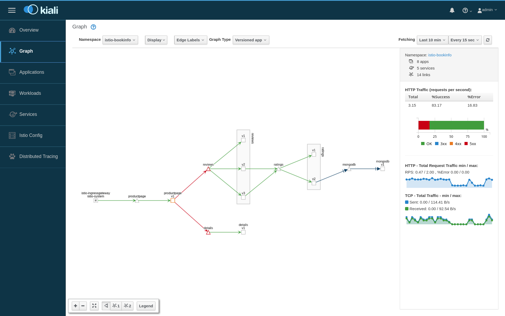{kind=link}
Monitoring
Service Status
An external monitoring service must be set up!
This service regularly polls the Big Data Platform and notifies (by email, SMS, ...) the system administrators in case of unavailability.
A tool like UptimeRobot offers such a service (free basic formula), as well as a status dashboard.
Example of use of the free UptimeRobot service at CETIC.
Source: UptimeRobot.
Monitoring
Management of application logs
To easily monitor and consult the application logs (errors, warnings, debug), to audit / trace the actions of the users a posteriori (for example in case of audit), it is recommended to set up a tool for log management to centralize logs of the Big Data Platform components and other system components.
The ELK application stack: ElasticSearch, Logstash, Kibana can be integrated with the Big Data Platform.
|
Search engine based on the Lucene library. Distributed, multitenant-capable full-text search engine with an HTTP web interface and schema-free JSON documents. Java. Apache open source project. |
Server-side data processing pipeline that ingests data (e.g. log records) from a multitude of sources simultaneously, transforms it, and then sends it. Open source project. |
Open source data visualization plugin for Elasticsearch. Provides visualization capabilities on top of the content indexed on an Elasticsearch cluster. 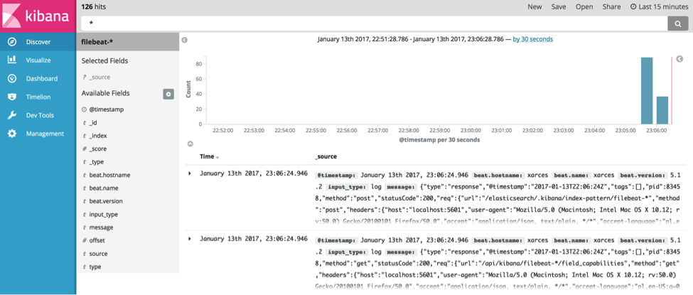Source: Image source. |
|
Aéropole de Charleroi-Gosselies Avenue Jean Mermoz 28 B-6041 Charleroi - Belgique
|
Benchmark tools
|